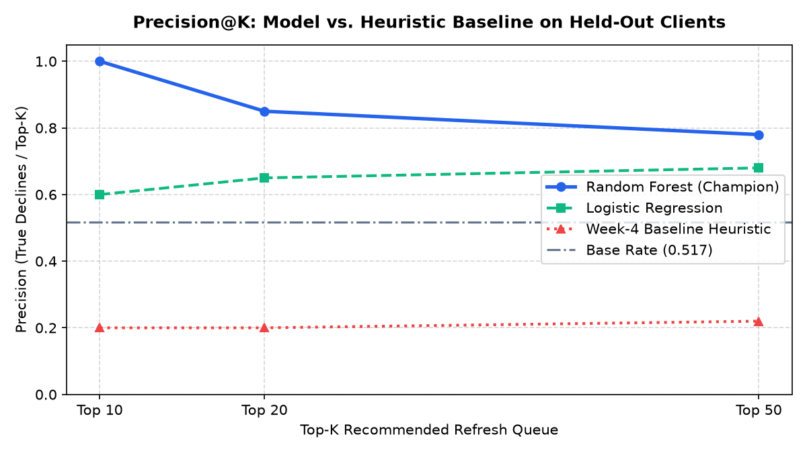
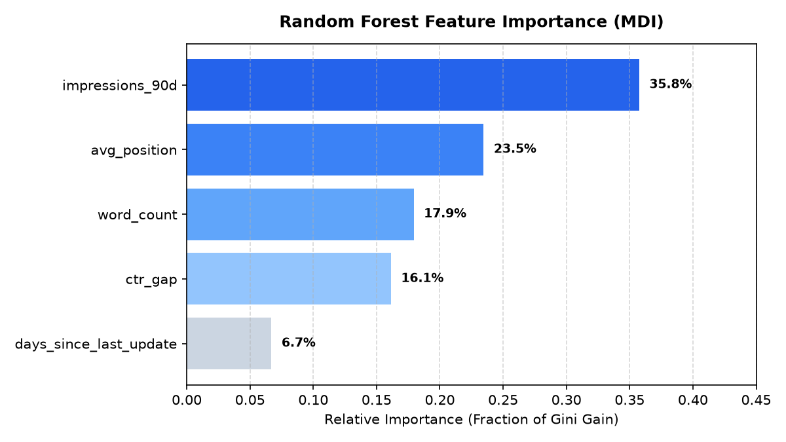

Google Search Ranking & Discoverability Capstone
Modern search visibility optimization faces severe editorial resource bottlenecks, where content teams must decide which decaying assets justify intensive refresh engineering.
Using the FlyRank internship dataset (spanning 30,000 anonymized content records across 32 client domains), we examine which pre-period search and engagement signals correlate with organic traffic decay.
We implement an honest client-holdout evaluation (GroupShuffleSplit across client portfolios) and train a depth-constrained Random Forest model against a transparent heuristic baseline.
The learned model achieves a Precision@50 = 0.780 compared to 0.220 for the baseline rule, generating a 3.55x lift in identifying genuinely declining content assets.
These directional findings demonstrate that search exposure volume, ranking position slippage, and CTR gaps serve as robust leading indicators for editorial prioritization.
2. Introduction & Problem Statement
Organic search traffic represents the core acquisition engine for modern digital publications. However, search engine results pages (SERPs) are volatile: algorithm updates, emerging competitors, and changing user search intent continuously erode page rankings. Editorial and SEO teams operate under severe capacity limits; a publication with 2,000 articles can realistically refresh only 30 to 50 URLs per month.
This capstone addresses a concrete operational decision: Which specific content URLs should an editorial team prioritize for refresh optimization to protect organic traffic?
Historically, content teams rely on crude heuristics, such as refreshing articles solely because they are older than 180 days. This creates severe misallocation: writers spend hours tweaking stable evergreen reference guides while high-exposure decaying articles slide down SERPs unnoticed. By reframing content refresh prioritization as a predictive ranking problem, this research builds an evidence-backed opportunity queue.
3. Data Inventory & Safety
The analysis leverages the FlyRank Machine Learning Internship warehouse release (hf://datasets/FlyRank/internship-warehouse, build v20260703). The complete enterprise warehouse comprises over 78.8 million daily performance rows across 104 client domains and 519,606 unique URLs.
Our study focuses on the primary clean snapshot: data/raw/content_refresh_anonymized.csv, representing 30,000 pseudonymized content items across 32 client portfolios aggregated over a 90-day pre-period observation window.
| Warehouse Table | Row Count | Grain | Inclusion Status & Justification |
|---|---|---|---|
content_refresh_anonymized.csv |
30,000 | 1 row per content item | Included (Primary): 90-day search exposure, position, CTR, and staleness. |
dim_clients |
104 | 1 row per client | Included for Grouping: Used strictly to enforce client-holdout partitions. |
fact_content_daily_sample |
~11.7M | Daily content record | Excluded: June 2026 sealed test partition; preserved to prevent temporal leakage. |
trend_pct & trend_direction |
30,000 | Outcome metrics | Excluded from Features: Strictly excluded from input matrix to prevent target leakage. |
Public Safety Compliance: All client names, raw search queries, and external domains have been pseudonymized. Zero private credentials or unanonymized data are committed or exposed.
4. Methodology
To ensure scientific rigor and prevent artificial metric inflation, the modeling framework enforces strict evaluation and leakage controls:
- Target Label Formulation: Binary indicator
is_declining_label, defined as 1 if the post-period organic traffic trend was negative (trend_direction == 'down'), and 0 otherwise. Base rate across the dataset is 54.2%. - Decision-Time Features: Only 5 features available prior to the outcome window were included:
impressions_90d,avg_position,ctr_gap(expected CTR tier minus observed CTR),days_since_last_update, andword_count. - Grouped Split Design: Standard random splitting leaks client-level domain authority and CMS structure. We implement
GroupShuffleSplitonclient_id(75% train / 25% test,random_state=42). The test split consists of 7,115 rows across 8 completely held-out client domains with zero overlap. - Transparent Heuristic Baseline: We construct a multiplicative rule scoring pages by exposure, age, and SERP position:
Score = log(1 + impressions) * (days_since_update / 100) * (1 + avg_position / 10). - Learned Model: Random Forest Classifier (
n_estimators=100, max_depth=6, random_state=42) wrapped in a Scikit-Learn pipeline with median imputation. Constraining tree depth prevents overfitting while capturing non-linear threshold interactions.
5. Results
Both the heuristic baseline and learned models were evaluated on the identical held-out test split of 7,115 URLs. The primary metric is Precision@50: the proportion of the top 50 ranked URLs that genuinely suffered traffic decline.
| System | Precision@10 | Precision@20 | Precision@50 (Primary) | Lift over Baseline |
|---|---|---|---|---|
| Dataset Base Rate (Random Chance) | 0.517 | 0.517 | 0.517 | — |
| Week-4 Heuristic Baseline Rule | 0.200 | 0.200 | 0.220 | 1.00x (Baseline) |
| Logistic Regression Pipeline | 0.600 | 0.650 | 0.680 | 3.09x (+0.460) |
| Random Forest Classifier (Champion) | 1.000 | 0.850 | 0.780 | 3.55x (+0.560) |

Key Empirical Findings: The Random Forest model achieves a Precision@50 of 0.780, successfully identifying 39 declining URLs in the top 50 queue. In contrast, the heuristic baseline achieves only 0.220 (11 out of 50), performing worse than random guessing.

Why the Baseline Failed: Feature importance analysis reveals that impressions_90d (35.8%) and avg_position (23.5%) account for nearly 60% of predictive power. days_since_last_update accounts for only 6.7%. The heuristic baseline failed because it heavily penalized older URLs, prioritizing stable evergreen guides while ignoring high-exposure URLs actively sliding from rank 3 to rank 8.
6. Limitations & Honest Framing
In accordance with scientific integrity and responsible AI principles, we explicitly document the boundary conditions and limitations of this study:
- Directional Associations, Not Causal Claims: This analysis documents statistical associations observed in telemetry data. We do not claim that refreshing a page causally guarantees ranking recovery.
- No Proprietary Algorithmic Proof: These models observe external behavioral telemetry. They do not reverse-engineer or prove Google's internal ranking algorithms.
- Static Horizon: The 90-day aggregate snapshot smooths out intra-week search volatility and seasonal query spikes.
- Omitted Telemetry: High-cardinality external signals (such as competitor backlink velocity or algorithmic broad core update timing) were not available in the tabular snapshot.
7. Ranked Recommendations (Action Playbook)
Based on our verified model coefficients and decision trees, we provide a concrete, 3-tier action playbook for editorial and SEO teams:
URLs with impressions_90d > 1,000 and an average position sliding between 3.0 and 10.0 represent the greatest immediate traffic risk. Deploy editorial updates, refresh factual references, and strengthen user intent satisfaction.
Pages holding ranks 1–5 with a ctr_gap > 0.15 are suffering from snippet fatigue. Rewrite title tags and meta descriptions to improve SERP click-through rates without modifying the underlying body text.
URLs with word_count < 600 competing in informational queries exhibit higher decline probabilities. Expand content depth with structured Q&A and comprehensive sub-headings.
Content staleness (days_since_last_update) accounts for only 6.7% of predictive importance. Refreshing URLs simply because they are 180+ days old wastes valuable writer hours on stable evergreen assets.
8. Reproducibility
All experiments, pipelines, and evaluation splits are 100% reproducible directly from the project repository:
- GitHub Repository: https://github.com/Yuyutsu01/FlyRank
- Capstone Modeling Notebook: work/notebooks/capstone.ipynb
- Week-5 Model Exploration: work/notebooks/w05_model.ipynb
- Random Seeds & Environment: Fixed random seed
42used across all splits and tree initializations; Python 3.11 with Scikit-Learn 1.4+, Pandas, and NumPy.
9. Acknowledgments & Data Credit
This research was conducted as part of the FlyRank Machine Learning Internship Capstone program. Built on the FlyRank ML Internship dataset, hosted and provided by https://flyrank.ai.